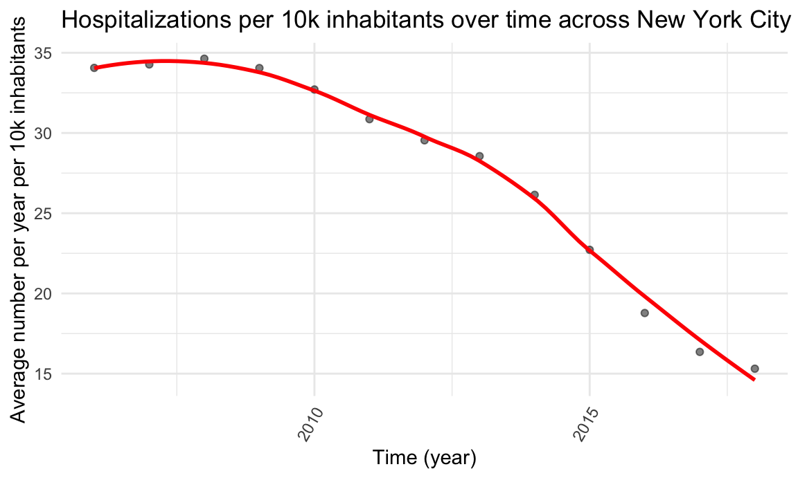

Asthma Rates & Urban Green Spaces in NYC
th2899
2022-12-08
Asthma is a disease that causes breathing problems. It inflames and narrows the airways that carry oxygen in and out of the lungs. People with asthma can have recurring periods of wheezing, chest tightness, shortness of breath and coughing. These breathing problems are called asthma attacks or episodes. Asthma is a chronic disease. In other words, people with asthma live with it every day. Asthma is triggered by an allergic reaction between the lungs and allergens in the environment including air pollution, diesel exhaust particles, tobacco smoke, cockroach particles, dander, and mold (Columbia Center for Children’s Environmental Health, 2022).
Asthma is a serious public health problem in New York State and the nation. It affects about 10.0 percent (more than 400,000) of children and 9.9 percent (more than 1.5 million) of adults in New York State. Asthma takes its toll in many ways. It can result in lost nights of sleep and disruption of activities for the individual, as well as for his or her family. Asthma is the leading cause of school absenteeism in children, and parents frequently miss days from work as a result of their child’s asthma.
Each year, nearly half a million people in the United States are hospitalized for asthma. Asthma ED visits and hospitalization rates tell us about the effect of asthma in a community due to environmental and household triggers, access to medical care, and the quality of disease management for asthma. ED visits and hospitalization shows us only the most severe cases of asthma; most people with asthma suffer the health effects without needing to go to hospital.
Heightened asthma rates are one of the negative health outcomes resulting from high population density of cities (and resulting high density of environmental toxins being released into the atmosphere). The burden of asthma falls disproportionately on the most disadvantaged residents of New York City. A study has reported that children in East Harlem are 13 times more likely to go to the emergency room for asthma-related incidents compared to children in the nearby affluent Upper East side. The inequality is reflected by the 31% of East Harlem residents living in poverty compared to 7% in the Upper East Side. Racial demographics mirror this pattern, with East Harlem being half Latino and one third Black compared to the 78% White Upper East Side (LóPez et al., 2015).
Could roofs planted with vegetation, aka. Urban Green Spaces (UGS), help reduce the burden of asthma? At least in theory, plants absorb gaseous pollutants that are in the air. By absorbing harmful gases, plants release oxygen into the atmosphere which could help to combat the harmful effects of air pollution. Our hypothesis is that by having green spaces in urbanised areas, such as rooftop vegetation, a higher quality of the air within the surrounding area could be achieved.
In the following analysis, we will be drawing on a dataset of asthma hopsitalizations and ED visits between 2000 and 2019 in New York State, broken down by regions. A total of 3870 observations are recorded in the original dataset, but data cleaning and wrangling will reduce total observations to a smaller, more relevant number.
Goals of the analysis
The primary goal of this analysis is to provide an overview of asthma rates across the different boroughs of NYC. We would like to understand how the asthma burden of asthma is distributed across the different borough, as well as analyse whether there have been any changes over time. Secondly, we would like to understand whether there might be any links between the UGS dataset and the asthma dataset. For example, did increases in the primary dataset on NYC Urban Green Spaces also correlate with a simultaneous decrease in asthma rates?
Data load & wrangling
We load and wrangle the two primary Urban Green Spaces (UGS)
dataset as described in the page dedicated to the UGS dataset
to generate a UG_df dataframe and an
UG_agg_df dataframe.
Next, we load and wrangle the secondary NY Asthma dataset to generate a asthma_df dataframe. The original .csv dataset is available in the “data” folder within the project’s repository. The following procedure is applied:
- filter out relevant observations (aka the boroughs of New York City
from years 2006-2018) using
filter() - select relevant variables using
select() - rename certain variables for comprehension using
remame(), as well as certain borough names and years usingmutate()andrecode()` - re-order the variables using
arrange() - calculate percentage of green coverage of each building, as well as
recode()borough names and ownership status, and convert sqm int sqm, usingmutate() - note ownertypes are aggregated into “Public”, “Private” and “Other”
as per mapPLUTO definitions (refer to the codebook for more details).
Given the presence of “na”, the
replace_na()function is employed.
Next, I also create a second dataframe with the goal of creating a
‘severity’ measure, which is the nr of ED visits divided by
Hospitalzations (both per 10k inhabitants), for each borough and year
separately. This requires the use of pivot_wider(),
mutate() and pivot_longer()
Note that all variable names are available in the Project’s codebook section.
Descriptive analysis
Next, we perform a descriptive analysis of the NY Asthma secondary dataset, as well as stratified analysis at the borough level.
Overall, the *asthma_df contains contains 6 variables related to 156 measures of asthma in NYC.
Below graph shows the development of ED visits per 10k inhabitants between 2006-2018 across all of New York City. Rates increased until 2013 to a peak of close to 160 recorded ED visits per 10k inhabitants, after which a stark drop has been recorded, a trend that seems to coninue to this day. In 2018 recorded ED visits per 10k inhabitants were down to close to 110 per 10k inhabitants.

Next, we look a graph that shows the development of Hospitalizations per 10k inhabitants between 2006 and 2018 across all of New York City. After remaining stable at approx. 35 per 10k inhabitants, the rate started to drop continosly and has reached less than half of that value of appox. 15 per 10k inhabitants. On first glance, it seems as if hospitalizations have decreased more than ED visits, indicating that while both rates and severity of asthma have dropped, severity as declined more.

To test this we next plotted the severity measure we calculated manually: the rate of Hospitalizations per 10k inhabitants divided by the rate of ED Visits per 10k inhabitants. We conclude that our above hypothesis seemed to have been correct: in 2006 roughly ever fourth (or approx. 24%) of ED visits resulted in Hospitalizations, that number has gradually decreased to every seventh-eight (or approx 13%). Ee hereby assume that every Hospitalizations resulted in a prior ED visit.

Static Analysis by Boroughs
Below table shows ED visits and Hospitalizations per 10k inhabitants for each borough, and for New York City overall as averages across 2006-2018. The Bronx is a clear outlier, with 264 / 10k ED visits and 56 /10k Hospitalizations, compared to the city average of 143 / 10k ED visits and 28 / 10k ED visits. Manhattan is slightly above the average, while Brooklyn is slightly below. Queens and Staten Island are clearly below the average. In summary, the burden of asthma historically clearly does not seem to be distributed evenly across the different borough of New York City.
| borough | ED Visits | Hospitalizations |
|---|---|---|
| Bronx | 263.83 | 55.73 |
| Brooklyn | 136.00 | 26.16 |
| Manhattan | 151.51 | 22.84 |
| New York City | 143.09 | 27.54 |
| Queens | 84.32 | 17.10 |
| Staten Island | 82.44 | 16.91 |
Let’s look at whether these inequlities still persisted in the most recent measurement Below table shows ED visits and Hospitalizations per 10k inhabitants for each borough, and for New York City overall as averages across 2006-2018. Asthma rates across all boroughs have decreased. While Bronx rates went down to 221 / 10k and 34 / 10k ED visits resp. Hospitalizations, the New York City average lowered to 116 / 10k and 15 / 10k ED visits resp. Hospitalizations. As a result, the inequities observed across the different boroughs seem to have persisted.
| borough | ED Visits | Hospitalizations |
|---|---|---|
| Bronx | 220.84 | 33.54 |
| Brooklyn | 109.20 | 12.64 |
| Manhattan | 117.33 | 12.45 |
| New York City | 116.32 | 15.31 |
| Queens | 68.12 | 9.90 |
| Staten Island | 68.30 | 10.24 |
The following graph visualizes above: ED visits / 10k inhabitants by borough in 2018. the Bronx is particularly hit with high asthma rates, even as of today.

A very similar pattern is observed for hospitalizations rates / 10k inhabitants by borough in 2018. The unequal burden is even more accentuated, as the Bronx tops the list by a wide margin. The Bronx not only seems to be affected more by higher asthma rates, the asthma cases also seem to be more severe (relatively) to the other boroughs.
Lastly, before we move to to visualizations over time, we wanted to take a look at absolute burden across the different boroughs. The following table show a the total number of ED Visits and Hospitalizations per borough (i.e., not adjusted per 10k inhabitants) in 2018. Still Bronx tops the list with 95k ED visits, followed by Brooklyn with 82k - compared to the total number in NYC of 279k this means that those two boroughs make up roughly two thirds of all asthma related ED visits. The same holds true for hospitalizations, where Bronx recorded 14k and Brooklyn 10k in 2018 (compared to 37k across NYC).
| borough | ED Visits | Hospitalizations |
|---|---|---|
| Bronx | 94758 | 14441 |
| Brooklyn | 82412 | 9547 |
| Manhattan | 49141 | 4980 |
| New York City | 278838 | 36918 |
| Queens | 43355 | 6546 |
| Staten Island | 9172 | 1404 |
The following graphic visualized what was discussed above, at the example of ED absolute nr of visits in 2018. The Bronx and Brooklyn are clearly carrying the largest burden of asthma ED visits.

Analysis over time by borough
This section is the most critical one, as we analyze how rates have changed over time.
Below graph visualizes ED visits / 10k inhabitants per borough from 2006 to 2018. The patterns over time are relatively consistent: the Bronx has always been the most affected borough, and QUeens / Staten Island always the least, while Manhattan and Brooklyn were always close to the city average. The Bronx experienced much more fluctuation in rates, a decrease from 2006-2010 was followed by an increase until 2014 and a subsequent stark decline until 2018. All borough seem to experience sinking ED visit rates over between 2014-2018.
Below graph visualizes Hospitalizations / 10k inhabitants per borough from 2006 to 2018. The general pattern is different to ED visits, as nearly all boroughs experienced a consitent decline in Hospitalization rates since 2006. The bronx tops the list across all years, while all other borough have gotten very close to the city average.
Lastly, we look at severity of asthma in the boroughs across time by using our measure of hospitalizations divided by ED visits. Interestingly, this is the one measure where the Bronx (while still remaining among the highest on the list) has managed to close the gap to the other borough a bit. Still, in the Bronx about 15% of ED visits lead to hospitalizations, while that number only 10% in Manhattan.

Linear Models
Next, we will be analyzing whether linear models can provide further insights.
First step is to create three dataframes (one for each indicator) that do not include New York City overall and set Manhattan as the comparator borough.
Running a linear regression for ED visits, all values are significant: the Bronx is predicted to have 112 / 10k ED visits more vs. Manhattan, while Brooklyn, Queens, and Staten island are predicted to have 16 / 10k, 67 / 10k resp. 69 / 10k less than Manhattan.
| term | estimate | std.error | statistic | p.value |
|---|---|---|---|---|
| (Intercept) | 151.51 | 3.76 | 40.33 | 0 |
| boroughBronx | 112.32 | 5.31 | 21.14 | 0 |
| boroughBrooklyn | -15.51 | 5.31 | -2.92 | 0 |
| boroughQueens | -67.19 | 5.31 | -12.65 | 0 |
| boroughStaten Island | -69.06 | 5.31 | -13.00 | 0 |
Running a linear regression for Hospitalizations, all values except for Brooklyn and Queens are significant: the Bronx and Brooklyn are predicted to have 33 / 10k resp.3 / 10k hospitalizations more vs. Manhattan, while Queens and Staten Island are predicted to have approx 6 / 10k each less than Manhattan.
| term | estimate | std.error | statistic | p.value |
|---|---|---|---|---|
| (Intercept) | 22.84 | 2.10 | 10.89 | 0.00 |
| boroughBronx | 32.90 | 2.97 | 11.09 | 0.00 |
| boroughBrooklyn | 3.33 | 2.97 | 1.12 | 0.27 |
| boroughQueens | -5.73 | 2.97 | -1.93 | 0.06 |
| boroughStaten Island | -5.92 | 2.97 | -2.00 | 0.05 |
Also the severity measures are all significant. The actual values are a bit difficult to interpret, but all boroughs seem to experience higher severity vs. Manhattan.
| term | estimate | std.error | statistic | p.value |
|---|---|---|---|---|
| (Intercept) | 0.15 | 0.01 | 13.39 | 0.00 |
| boroughBronx | 0.06 | 0.02 | 3.99 | 0.00 |
| boroughBrooklyn | 0.04 | 0.02 | 2.69 | 0.01 |
| boroughQueens | 0.05 | 0.02 | 3.33 | 0.00 |
| boroughStaten Island | 0.06 | 0.02 | 3.52 | 0.00 |
Comparison with UGS
Next we will do a comparison with the UGS dataset, first visually and then also based on linear models.
First, we create a value of green spaces that we can compare to asthma rates, namely the cumulative surface area of vertical greenspace that has been constructed between 2006-2018 in each borough.
| borough | cons_year | green_area_sum | green_area_cum |
|---|---|---|---|
| Bronx | 2006 | 1430.45 | 1430.45 |
| Bronx | 2007 | 942.75 | 2373.20 |
| Bronx | 2008 | 1525.18 | 3898.38 |
| Bronx | 2009 | 574.71 | 4473.08 |
| Bronx | 2010 | 1579.57 | 6052.65 |
| Bronx | 2011 | 606.97 | 6659.62 |
| Bronx | 2013 | 276.50 | 6936.12 |
| Bronx | 2014 | 566.23 | 7502.36 |
| Bronx | 2016 | 741.25 | 8243.60 |
| Brooklyn | 2007 | 6843.79 | 6843.79 |
| Brooklyn | 2008 | 103.05 | 6946.84 |
| Brooklyn | 2009 | 1111.39 | 8058.23 |
| Brooklyn | 2010 | 2496.56 | 10554.80 |
| Brooklyn | 2011 | 13776.28 | 24331.08 |
| Brooklyn | 2012 | 752.78 | 25083.86 |
| Brooklyn | 2013 | 524.56 | 25608.41 |
| Brooklyn | 2014 | 854.42 | 26462.83 |
| Brooklyn | 2015 | 1344.79 | 27807.62 |
| Manhattan | 2006 | 5838.59 | 5838.59 |
| Manhattan | 2007 | 8377.50 | 14216.09 |
| Manhattan | 2008 | 4532.25 | 18748.34 |
| Manhattan | 2009 | 1912.66 | 20661.00 |
| Manhattan | 2010 | 2205.54 | 22866.53 |
| Manhattan | 2011 | 14391.25 | 37257.78 |
| Manhattan | 2012 | 742.04 | 37999.82 |
| Manhattan | 2013 | 1165.55 | 39165.37 |
| Manhattan | 2015 | 1507.17 | 40672.54 |
| Manhattan | 2016 | 411.37 | 41083.91 |
| Queens | 2006 | 1379.60 | 1379.60 |
| Queens | 2007 | 980.11 | 2359.72 |
| Queens | 2008 | 202.25 | 2561.97 |
| Queens | 2009 | 541.88 | 3103.84 |
| Queens | 2010 | 978.16 | 4082.00 |
| Queens | 2011 | 619.90 | 4701.90 |
| Queens | 2012 | 961.81 | 5663.71 |
| Queens | 2013 | 416.90 | 6080.61 |
| Queens | 2015 | 151.63 | 6232.24 |
| Staten Island | 2011 | 709.47 | 709.47 |
We first visualize the result and compare it to the graph created on ED visits (taking that as a proxy for asthma rates). One trend is clear: while asthma rates seem to have declined, there seems to have been an increase in UGS. The patterns are not consistent across borough, e.g., there has been only gradual improvement in UGS in the Bronx, while the decline in asthma was more drastic. In short, there must surely be many other factors at play that have caused asthma rates to decline, but potentially UGS did play an effect in reducing the numbers.
Let’s run a couple of linear regression to see whether they produce any statistically significant results.
First, we are creating a combined df consisting of both UGS and asthma datasets by using a (double) leftjoin based on borough and year. We are using na.locf() to replace missing UGS values with the value from the last year (i.e, if there was a year with no greenspaces added, then that year must have had the same total number of greenspaces as the last year). Due to the way the dataframe is structured this requires a manual insertion of a value at two points of the dataset.
Let’s run some regression! First I am creating separate dataframes for each indicator and set Manhattan as the comparator.
Below tables show the results of linear regression of the indicator (either ED visit rate, hospitalization rate or severity measure) on a combination of borough and total UGS surface area.
ED visit rate vs. borough and cumulative UGS surface area:
| term | estimate | std.error | statistic | p.value |
|---|---|---|---|---|
| (Intercept) | 169.474 | 8.610 | 19.684 | 0.000 |
| green_area_cum | -0.001 | 0.000 | -2.332 | 0.024 |
| boroughBronx | 97.871 | 8.244 | 11.872 | 0.000 |
| boroughBrooklyn | -22.158 | 6.138 | -3.610 | 0.001 |
| boroughQueens | -82.420 | 8.497 | -9.700 | 0.000 |
Hospitalization rate vs. borough and cumulative UGS surface area:
| term | estimate | std.error | statistic | p.value |
|---|---|---|---|---|
| (Intercept) | 41.361 | 4.235 | 9.767 | 0.000 |
| green_area_cum | -0.001 | 0.000 | -4.889 | 0.000 |
| boroughBronx | 17.994 | 4.055 | 4.438 | 0.000 |
| boroughBrooklyn | -3.523 | 3.019 | -1.167 | 0.249 |
| boroughQueens | -21.433 | 4.179 | -5.129 | 0.000 |
Severity vs. borough and cumulative UGS surface area:
| term | estimate | std.error | statistic | p.value |
|---|---|---|---|---|
| (Intercept) | 0.257849 | 0.020177 | 12.779207 | 0.000000 |
| green_area_cum | -0.000004 | 0.000001 | -6.070234 | 0.000000 |
| boroughBronx | -0.025629 | 0.019319 | -1.326596 | 0.191052 |
| boroughBrooklyn | 0.001578 | 0.014385 | 0.109702 | 0.913113 |
| boroughQueens | -0.040728 | 0.019912 | -2.045361 | 0.046440 |
To our surprise, all three models return statistically significant values for the effect of cumulative UGS surface area on the studied indicators, while accounting for borough differences. The direction of the effect is how we would expect: increase in cumlulative UGS surface area leads to a reduction in ED visit rate, hospitalization rate, and our severity measure! We conclude that uban green spaces might indeed have played a role in reducing asthma rates across New York City.